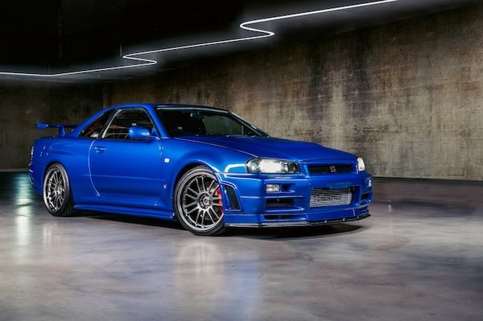

Tokyo

Tokyo adalah ibu kota Jepang dan terletak di wilayah Kanto di pulau Honshu. Tokyo juga merupakan salah satu kota termahal yang ada di Jepang.
Tokyo merupakan perpaduan antara modern dan tradisional, dari menara pencakar langit hingga kuil-kuil yang berada pada distrik Tokyo. Berbagai
macam streetfood yang bisa di jelajahi sehingga Tokyo merupakan destinasi yang menarik bagi wisatawan.
Mobil

Mobil-mobil di Jepang dikenal seluruh dunia karena inovasi, ketangguhan, dan kualitasnya. Merek yang iconic adalah Nissan, Toyota, Honda, dan Mazda.
Salah satu mobil produksi jepang yang menarik banyak orang ataupun penyuka mobil-mobil JDM adalah Nissan Skyline R-34 GT-R. Dengan mesin twin turbo yang menghasilkan
hp(horsepower) sekitar 280hp hingga lebih dari 330hp, dengan desain eksteriornya yang khas seperti lampu depan, bumper, dan spoilernya ini merupakan daya tarik yang tinggi bagi penyukan JDM.
GT-R R34 ini juga merupakan salah satu mobil yang paling diinginkan oleh para pecinta JDM maupun penggemar mobil sport lainnya.
Anime
Anime merupakan salah satu Tv show populer di Jepang. Dengan visual yang unik, berbagai variasi cerita, dan beragam genre. Anime menawarkan para penontonnya dengan visual dan storyline yang menarik.
Anime telah menjadi bagian penting dari budaya di Jepang, dengan banyaknya judul yang ada sehingga dapat beradaptasi dan dijadikan game, ada juga untuk produk merchandise dan manga. Anime yang populer ataupun menarik ada "Naruto," "One Piece," dan "Dragon Ball". Anime terus berkembang dan
beradaptasi seiring perkembangan zaman, biasanya dengan kualitas visual dan storyline yang menarik dan mendapatkan berbagai fans dari berbagai usia.